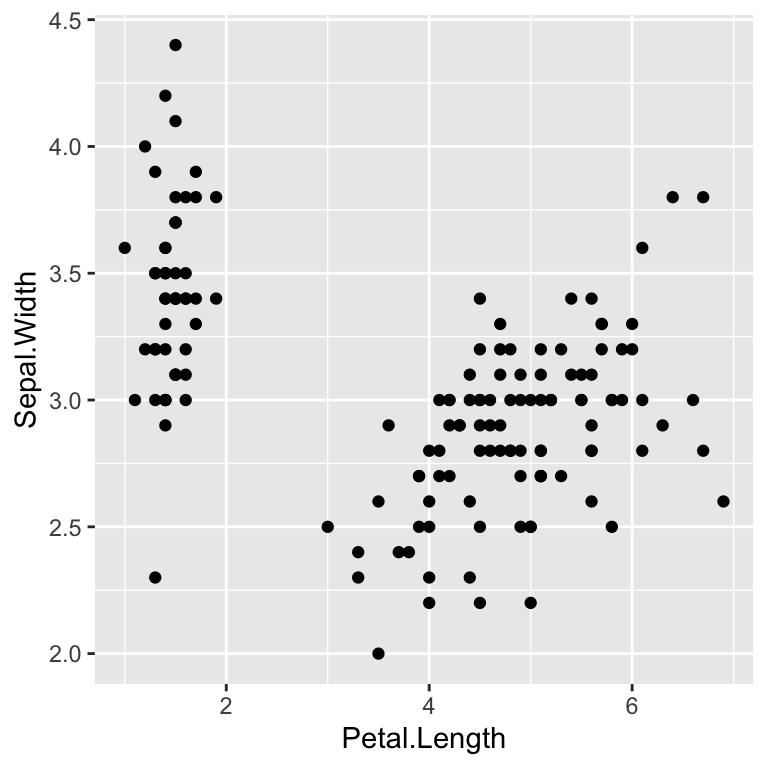

The ggplot approach
A quick lesson from art
Have you ever watched Bob Ross paint?
You should! Here is an example of someone painting in the style of Bob Ross on an iPad:

Notice how the painting comes together in steps, building to a beautiful final product:
- From a blank canvas, a black foreground and light-blue background
with clouds add simple dimension;
- Next, the mountains add significant substance to the
painting;
- Embellishments further fill out the scene, like the different color
snow on the east and west sides of the mountain, or the small forest at
the base;
- Finally, color and detail fill the foreground finishing the work.
“Painting” a plot
When we use ggplot2 to make our graphics, we will take
the artistic approach, proceeding incrementally. Starting with a
background, we add basic structure, then substance, embellishments, and
finish with important details. We will work sequentially, adding and
modifying until our final plot makes us happy, like Bob’s trees.
Notice how this plot above is built in steps:
- From a blank gray canvas, we add variables (e.g. Sepal.Width) to the
axes to provide simple dimension;
- Next, points create a scatter plot, demonstrating the relationship
between our variables;
- Embellishments add to the plot, like coloring the dots according to
the species of iris;
- Finally, we adjust our axes labels and scales, and add titles and
themes to finish the plot.
In the next topic, we’ll walk through the incremental steps required to build this very plot!
Painting a plot, Bob Ross style
To get our a fresh canvas, we simply start with the commandggplot(); try it out for yourself
ggplot()Adding simple dimensions
For our first plot, we will use the iris data frame. It
contains measurements from 150 iris flowers, covering three different
species: setosa, versicolor, and virginica. For each flower, we record
the species of iris, as well as length and width measurements of the
flower’s sepals and petals.
When we know the data frame from which we want to build our plot (and
it’s in tidy-format, more on this later), we can add this
to the code for out plot.
In our painting analogy, this is like putting pain on a pallete.
Setting data = iris allows us to pull data from the
iris data frame and use it to build the plot. Let’s add
some simple dimension to our blank canvas by
- specifying a data frame (painting pallete)
- specifying which variables we want to appear on our axes.
In the code below, replace the ... with two variables of
interest; specifically, put Sepal.Width on the \(y\)-axis and Petal.Length on
the \(x\)-axis:
ggplot(data = iris,
aes(x = ...,
y= ...))ggplot(data = iris,
aes(x = Petal.Length,
y = ...))Adding substance
To highlight the relationship between the variables on our axes, we
use a geometry. In the case where we work with two
quantitative variables, we often use a “point”, or dot, to represent
each flower in the data frame.
ggplot(data = iris,
aes(x = Petal.Length,
y = Sepal.Width)) +
geom_point()Notice we accomplished this by + (adding)
geom_point() (a point geometry) to the canvas we already
set up.
Important Note: the plus sign must be on the same line as the last element you added to your plot; then hit return to add your next element.
Before continuing to the next topic, please explore this basic
“painting” by changing around the variables you use for x
and y. Specifically, what happens when you set one of your
axes to the categorical variable Species. What
happens, and why?
Exercise:
In the block below,
- practice writing the additional code to add the point geometry to the plot;
- then, experiment with different variables for the
xandyaesthetics.
ggplot(data = iris,
aes(x = Petal.Length,
y= Sepal.Width))# Change the variables specified in the x and y aesthetics
ggplot(data = iris,
aes(x = Petal.Length,
y= Sepal.Width))+
geom_point()# Change the variables specified in the x and y aesthetics
ggplot(data = iris,
aes(x = Species,
y= Sepal.Width))+
geom_point()# Change the variables specified in the x and y aesthetics
ggplot(data = iris,
aes(x = Petal.Length,
y= Species))+
geom_point()Adding some happy little trees
Plot embellishments
Here is our plot so far
ggplot(data = iris,
aes(x = Petal.Length,
y = Sepal.Width))+
geom_point()
Suppose, however, we’d like to color these points according the
Species of iris.
Below is an example of adding an aesthetic to the point geometry that accomplishes our goal. Since the aesthetic is applied to the point geometry, one approach is to addImportant Concept: Any component of the plot that depends on data must be assigned to an “aesthetic”, so inside
aes().
aes(color=Species) inside
our point geometry code. Inspect the block below and try running it.
ggplot(data = iris,
aes(x = Petal.Length,
y = Sepal.Width)) +
geom_point(aes(color=Species))# we could also add the aesthetic inside the ggplot() component
# but this means all geometries that follow would have this aesthetic.
# This approach makes color=Species a "global" aesthetic
# The code below also generates the same plot:
ggplot(data = iris,
aes(x = Petal.Length,
y = Sepal.Width,
color = Species)) +
geom_point()Explore: Try changing the color aesthetic to depend
on a different variable, like Sepal.Width. What happens?
Can you explain why this happens?
Notice that when adding a color aesthetic to the plot, a legend is automatically created and appended to the side.1
Optional Note: For reference, common
aesthetics in ggplot include: x, y, color, fill, and
group. However, new geometries can also require new aesthetics.
For example, geom_errorbar() will add error bars to plots,
but it requires the new aesthetics of ymin and
ymax to plot the bars properly.
We can change the position of the legend; another time, perhaps.↩︎
Finishing touches
The ggplot2 package allows for nearly endless
modifications and finishing touches. Some of these include:
- adjusting the units of our axes and changing which number divisions show
- adding trend lines to scatter plots
- adding text and shape annotations on top of the plot
- applying general plotting themes
In the interests of time and attention span, however, we will consider one more useful step: adding axis labels to the plot.
Since we are adding a layer, we put a + after our last
line of code. Then, after hitting enter to get to the next line, we will
use the labs() element to change our axes.
Let’s see if your ggplot2 intuition is developing. Run
the code below, and then make the necessary changes provide meaningful
labels to the axes and the title.
ggplot(data = iris,
aes(x = Petal.Length,
y = Sepal.Width)) +
geom_point(aes(color=Species)) +
labs(x=" some x label",
y="some y label",
title="title anyone?")# here is one option
ggplot(data = iris,
aes(x = Petal.Length,
y = Sepal.Width)) +
geom_point(aes(color=Species)) +
labs(x="Petal length in inches",
y="Sepal width in inches",
title="Comparing sepal width and petal length among species of irises")Checking your understanding!
In this final section, we review with a couple of questions about
what we have learned in this lesson. Feel free to flip back through the
exercises and instructions in the previous topics. In the last block, I
challenge you to recreate a new plot based on the mtcars
data frame!
# Place your test code hereReview Quiz
Question 1
Question 2
Question 3: Please refer to the code block below to answer this question.
ggplot(data = mtcars, aes(x=mpg,y=hp))
+
geom_point()Question 4
Final Exercise
For the final exercise, I challenge you to recreate a plot
using a new data frame and what you have learned from this tutorial. Our
data will come from the mtcars data frame, which collected
information on a collection of cars featured in the 1974 Motor
Trend magazine.
The mtcars data frame contains the following variables
(among others):
mpgMiles/(US) galloncylNumber of cylindershpGross horsepowerwtWeight (1000 lbs)qsec1/4 mile timeamTransmission (“automatic”,“manual”)
Use ggplot2 to recreate the following
plot!
# build your ggplot() code here and remember,
# do it in steps, checking the result as you build!ggplot(data = mtcars,
aes(x= ...,
y= ...))ggplot(data = mtcars,
aes(x= wt,
y= mpg)) +
geom_...ggplot(data = mtcars,
aes(x= wt,
y= mpg)) +
geom_point()ggplot(data = mtcars,
aes(x= wt,
y= mpg)) +
geom_point(aes(color=am))ggplot(data = mtcars,
aes(x= wt,
y= mpg)) +
geom_point(aes(color=am))+
labs(x="...",
y="...",
title="...")Conclusion
Great work today!
We learned how to sequentially build a basic plot using the
ggplot2 package. This involved:
- Making a blank canvas and ssociating a data frame with
ggplot(data= df) - Adding variables to axes with
aes() - Adding geometries, like
geom_point(), and - Adding axis labels with
labs().
The ggplot2 package can do even more, and has even more
flexibility when combined with other packages in the
tidyverse. Please check out these additional lessons:
- put lesson links here.